Unit 16
Chemistry in Everyday Life
Objectives
After studying this Unit you will be able to
- visualise the importance of Chemistry in daily life;
- explain the term 'chemotherapy';
- describe the basis of classification of drugs;
- explain drug-target interaction of enzymes and receptors;
- explain how various types of drugs function in the body;
- know about artificial sweetening agents and food preservatives;
- discuss the chemistry of cleansing agents.
From living perception to abstract thought, and from this to practice. V.I. Lenin.
By now, you have learnt the basic principles of chemistry and also realised that it influences every sphere of human life. The principles of chemistry have been used for the benefit of mankind. Think of cleanliness — the materials like soaps, detergents, household bleaches, tooth pastes, etc. will come to your mind. Look towards the beautiful clothes — immediately chemicals of the synthetic fibres used for making clothes and chemicals giving colours to them will come to your mind. Food materials — again a number of chemicals about which you have learnt in the previous Unit will appear in your mind. Of course, sickness and diseases remind us of medicines — again chemicals. Explosives, fuels, rocket propellents, building and electronic materials, etc., are all chemicals. Chemistry has influenced our life so much that we do not even realise that we come across chemicals at every moment; that we ourselves are beautiful chemical creations and all our activities are controlled by chemicals. In this Unit, we shall learn the application of Chemistry in three important and interesting areas, namely – medicines, food materials and cleansing agents.
16.1 Drugs and their Classification
Drugs are chemicals of low molecular masses (~100 – 500u). These interact with macromolecular targets and produce a biological response. When the biological response is therapeutic and useful, these chemicals are called medicines and are used in diagnosis, prevention and treatment of diseases. If taken in doses higher than those recommended, most of the drugs used as medicines are potential poisons. Use of chemicals for therapeutic effect is called chemotherapy,
16.1.1 Classification of Drugs
Drugs can be classified mainly on criteria outlined as follows:
(a) On the basis of pharmacological effect
This classification is based on pharmacological effect of the drugs. It is useful for doctors because it provides them the whole range of drugs available for the treatment of a particular type of problem. For example, analgesics have pain killing effect, antiseptics kill or arrest the growth of microorganisms.
(b) On the basis of drug action
It is based on the action of a drug on a particular biochemical process. For example, all antihistamines inhibit the action of the compound, histamine which causes inflammation in the body. There are various ways in which action of histamines can be blocked. You will learn about this in Section 16.3.2.
(c) On the basis of chemical structure
It is based on the chemical structure of the drug. Drugs classified in this way share common structural features and often have similar pharmacological activity. For example, sulphonamides have common structural feature, given below.
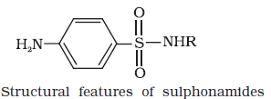
(d) On the basis of molecular targets
Drugs usually interact with biomolecules such as carbohydrates, lipids, proteins and nucleic acids. These are called target molecules or drug targets. Drugs possessing some common structural features may have the same mechanism of action on targets. The classification based on molecular targets is the most useful classification for medicinal chemists.
16.2 Drug-Target Interaction
Macromolecules of biological origin perform various functions in the body. For example, proteins which perform the role of biological catalysts in the body are called enzymes, those which are crucial to communication system in the body are called receptors. Carrier proteins carry polar molecules across the cell membrane. Nucleic acids have coded genetic information for the cell. Lipids and carbohydrates are structural parts of the cell membrane. We shall explain the drug-target interaction with the examples of enzymes and receptors.
16.2.1 Enzymes as Drug Targets
(a) Catalytic action of enzymes
For understanding the interaction between a drug and an enzyme, it is important to know how do enzymes catalyse the reaction (Section 5.2.4). In their catalytic activity, enzymes perform two major functions:
(i) The first function of an enzyme is to hold the substrate for a chemical reaction. Active sites of enzymes hold the substrate molecule in a suitable osition, so that it can be attacked by the reagent effectively. Substrates bind to the active site of the enzyme through a variety of interactions such as ionic bonding, hydrogen bonding, van der Waals interaction or dipole-dipole interaction (Fig. 16.1).
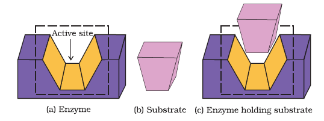
Fig. 16.1 (a) Active site of an enzyme (b) Substrate (c) Substrate held in active site of the enzyme
(ii) The second function of an enzyme is to provide functional groups that will attack the substrate and carry out chemical reaction.
(b) Drug-enzyme interaction
Drugs inhibit any of the above mentioned activities of enzymes. These can block the binding site of the enzyme and prevent the binding of substrate, or can inhibit the catalytic activity of the enzyme. Such drugs are called enzyme inhibitors.
Drugs inhibit the attachment of substrate on active site of enzymes in two different ways;
(i) Drugs compete with the natural substrate for their attachment on the active sites of enzymes. Such drugs are called competitive inhibitors (Fig. 16.2).
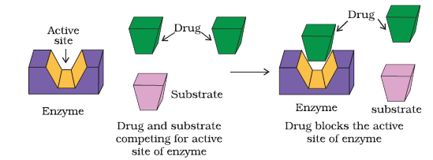
Fig. 16.2 Drug and substrate competing for active site
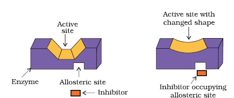
Fig. 16.3: Non-competitive inhibitor changes the active site of enzyme after binding at allosteric site.
(ii) Some drugs do not bind to the enzyme's active site. These bind to a different site of enzyme which is called allosteric site. This binding of inhibitor at allosteric site (Fig.16.3) changes the shape of the active site in such a way that substrate cannot recognise it.
If the bond formed between an enzyme and an inhibitor is a strong covalent bond and cannot be broken easily, then the enzyme is blocked permanently. The body then degrades the enzyme-inhibitor complex and synthesises the new enzyme.
16.2.2 Receptors as Drug Targets
Receptors are proteins that are crucial to body's communication process. Majority of these are embedded in cell membranes (Fig. 16.4). Receptor proteins are embedded in the cell membrane in such a way that their small part possessing active site projects out of the surface of the membrane and opens on the outside region of the cell membrane (Fig. 16.4).
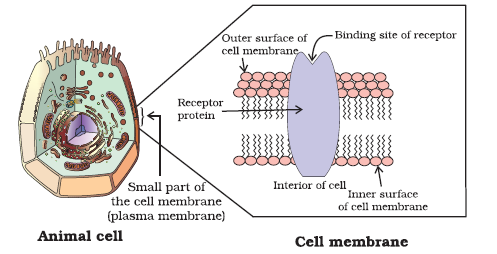
Fig. 16.4 Receptor protein embedded in the cell membrane, the active site of the receptor opens on the outside region of the cell.
In the body, message between two neurons and that between neurons to muscles is communicated through certain chemicals. These chemicals, known as chemical messengers are received at the binding sites of receptor proteins. To accommodate a messenger, shape of the receptor site changes. This brings about the transfer of message into the cell. Thus, chemical messenger gives message to the cell without entering the cell (Fig. 16.5).
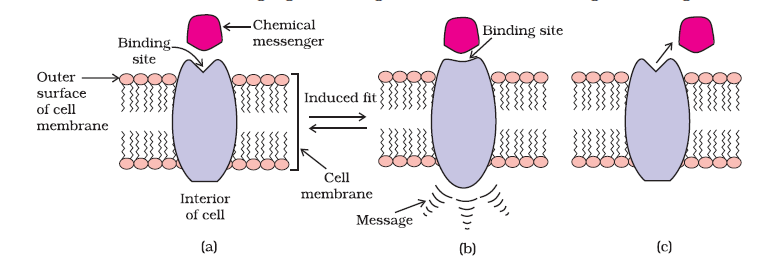
Fig. 16.5: (a) Receptor receiving chemical messenger (b) Shape of the receptor changed after attachment of messenger (c) Receptor regains structure after removal of chemical messenger.
There are a large number of different receptors in the body that interact with different chemical messengers. These receptors show selectivity for one chemical messenger over the other because their binding sites have different shape, structure and amino acid composition.
Drugs that bind to the receptor site and inhibit its natural function are called antagonists. These are useful when blocking of message is required. There are other types of drugs that mimic the natural messenger by switching on the receptor, these are called agonists. These are useful when there is lack of natural chemical messenger.
16.3 Therapeutic Action of Different Classes of Drugs
In this Section, we shall discuss the therapeutic action of a few important classes of drugs.
16.3.1 Antacids
Over production of acid in the stomach causes irritation and pain. In severe cases, ulcers are developed in the stomach. Until 1970, only treatment for acidity was administration of antacids, such as sodium hydrogencarbonate or a mixture of aluminium and magnesium hydroxide. However, excessive hydrogencarbonate can make the stomach alkaline and trigger the production of even more acid. Metal hydroxides are better alternatives because of being insoluble, these do not increase the pH above neutrality. These treatments control only symptoms, and not the cause. Therefore, with these metal salts, the patients cannot be treated easily. In advanced stages, ulcers become life threatening and its only treatment is removal of the affected part of the stomach.
A major breakthrough in the treatment of hyperacidity came through the discovery according to which a chemical, histamine, stimulates the secretion of pepsin and hydrochloric acid in the stomach. The drug cimetidine (Tegamet), was designed to prevent the interaction of histamine with the receptors present in the stomach wall. This resulted in release of lesser amount of acid. The importance of the drug was so much that it remained the largest selling drug in the world until another drug, ranitidine (Zantac), was discovered.
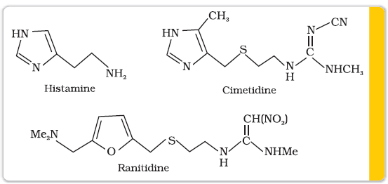
16.3.2 Antihistamines
Histamine is a potent vasodilator. It has various functions. It contracts the smooth muscles in the bronchi and gut and relaxes other muscles, such as those in the walls of fine blood vessels. Histamine is also responsible for the nasal congestion associated with common cold and allergic response to pollen.
Synthetic drugs, brompheniramine (Dimetapp) and terfenadine (Seldane), act as antihistamines. They interfere with the natural action of histamine by competing with histamine for binding sites of receptor where histamine exerts its effect.
Now the question that arises is, "Why do above mentioned antihistamines not affect the secretion of acid in stomach?" The reason is that antiallergic and antacid drugs work on different receptors.
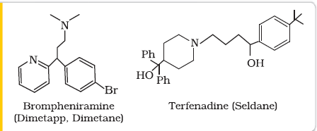
16.3.3 Neurologically Active Drugs
(a) Tranquilizers
Tranquilizers and analgesics are neurologically active drugs. These affect the message transfer mechanism from nerve to receptor.
Tranquilizers are a class of chemical compounds used for the treatment of stress, and mild or even severe mental diseases. These relieve anxiety, stress, irritability or excitement by inducing a sense of well-being. They form an essential component of sleeping pills. There are various types of tranquilizers. They function by different mechanisms. For example, noradrenaline is one of the neurotransmitters that plays a role in mood changes. If the level of noradrenaline is low for some reason, then the signal-sending activity becomes low, and the person suffers from depression. In such situations,antidepressant drugs are required. These drugs inhibit the enzymes which catalyse the degradation of noradrenaline. If the enzyme is inhibited, this important neurotransmitter is slowly metabolised and can activate its receptor for longer periods of time, thus counteracting the effect of depression. Iproniazid and phenelzine are two such drugs.
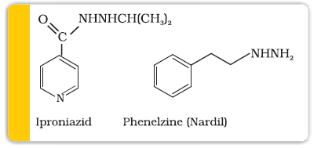
Some tranquilizers namely, chlordiazepoxide and meprobamate, are relatively mild tranquilizers suitable for relieving tension. Equanil is used in controlling depression and hypertension.
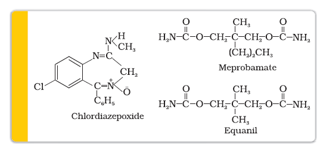
Derivatives of barbituric acid viz., veronal, amytal, nembutal, luminal and seconal constitute an important class of tranquilizers. These derivatives are called barbiturates. Barbiturates are hypnotic, i.e., sleep producing agents. Some other substances used as tranquilizers are valium and serotonin.
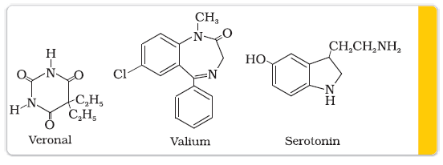
(b) Analgesics
Analgesics reduce or abolish pain without causing impairment of consciousness, mental confusion, incoordination or paralysis or some other disturbances of nervous system. These are classified as follows:
(i) Non-narcotic (non-addictive) analgesics
(ii) Narcotic drugs
(i) Non-narcotic (non-addictive) analgesics: Aspirin and paracetamol belong to the class of non-narcotic analgesics. Aspirin is the most familiar example. Aspirin inhibits the synthesis of chemicals known as prostaglandins which stimulate inflammation in the tissue and cause pain. These drugs are effective in relieving skeletal pain such as that due to arthritis. These drugs have many other effects such as reducing fever (antipyretic) and preventing platelet coagulation. Because of its anti blood clotting action, aspirin finds use in prevention of heart attacks.
(ii) Narcotic analgesics: Morphine and many of its homologues, when administered in medicinal doses, relieve pain and produce sleep. In poisonous doses, these produce stupor, coma, convulsions and ultimately death. Morphine narcotics are sometimes referred to as opiates, since they are obtained from the opium poppy.
These analgesics are chiefly used for the relief of postoperative pain, cardiac pain and pains of terminal cancer, and in child birth.
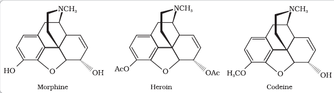
16.3.4 Antimicrobials
Diseases in human beings and animals may be caused by a variety of microorganisms such as bacteria, virus, fungi and other pathogens. An antimicrobial tends to destroy/prevent development or inhibit the pathogenic action of microbes such as bacteria (antibacterial drugs), fungi (antifungal agents), virus (antiviral agents), or other parasites (antiparasitic drugs) selectively. Antibiotics, antiseptics and disinfectants are antimicrobial drugs.
(a) Antibiotics
Antibiotics are used as drugs to treat infections because of their low toxicity for humans and animals. Initially antibiotics were classified as chemical substances produced by microorganisms (bacteria, fungi and molds) that inhibit the growth or even destroy microorganisms. The development of synthetic methods has helped in synthesising some of the compounds that were originally discovered as products of microorganisms. Also, some purely synthetic compounds have antibacterial activity, and therefore, definition of antibiotic has been modified. An antibiotic now refers to a substance produced wholly or partly by chemical synthesis, which in low concentrations inhibits the growth or destroys microorganisms by intervening in their metabolic processes.
The search for chemicals that would adversely affect invading bacteria but not the host began in the nineteenth century. Paul Ehrlich, a German bacteriologist, conceived this idea. He investigated arsenic based structures in order to produce less toxic substances for the treatment of syphilis. He developed the medicine, arsphenamine, known as salvarsan. Paul Ehrlich got Nobel prize for Medicine in 1908 for this discovery. It was the first effective treatment discovered for syphilis. Although salvarsan is toxic to human beings, its effect on the bacteria, spirochete, which causes syphilis is much greater than on human beings. At the same time, Ehrlich was working on azodyes also. He noted that there is similarity in structures of salvarsan and azodyes. The –As = As– linkage present in arsphenamine resembles the –N = N – linkage present in azodyes in the sense that arsenic atom is present in place of nitrogen. He also noted tissues getting coloured by dyes selectively. Therefore, Ehrlich began to search for the compounds which resemble in structure to azodyes and selectively bind to bacteria. In 1932, he succeeded in preparing the first effective antibacterial agent, prontosil, which resembles in structure to the compound, salvarsan. Soon it was discovered that in the body prontosil is converted to a compound called sulphanilamide, which is the real active compound. Thus the sulpha drugs were discovered. A large range of sulphonamide analogues was synthesised. One of the most effective is sulphapyridine.
Despite the success of sulfonamides, the real revolution in antibacterial therapy began with the discovery of Alexander Fleming in 1929, of the antibacterial properties of a Penicillium fungus. Isolation and purification of active compound to accumulate sufficient material for clinical trials took thirteen years.
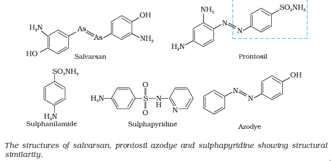
H.W. Florey and Alexander Fleming shared the Nobel prize for Medicine in 1945 for their independent contributions to the development of penicillin.
Antibiotics have either cidal (killing) effect or a static (inhibitory) effect on microbes. A few examples of the two types of antibiotics are as follows:
|
Bactericidal
|
Bacteriostatic
|
|
Penicillin
|
Erythromycin
|
|
Aminoglycosides
|
Tetracycline
|
|
Ofloxacin
|
Chloramphenicol
|
The range of bacteria or other microorganisms that are affected by a certain antibiotic is expressed as its spectrum of action. Antibiotics which kill or inhibit a wide range of Gram-positive and Gram-negative bacteria are said to be broad spectrum antibiotics. Those effective mainly against Gram-positive or Gram-negative bacteria are narrow spectrum antibiotics. If effective against a single organism or disease, they are referred to as limited spectrum antibiotics. Penicillin G has a narrow spectrum. Ampicillin and Amoxycillin are synthetic modifications of penicillins. These have broad spectrum. It is absolutely essential to test the patients for sensitivity (allergy) to penicillin before it is administered. In India, penicillin is manufactured at the Hindustan Antibiotics in Pimpri and in private sector industry.
Chloramphenicol, isolated in 1947, is a broad spectrum antibiotic. It is rapidly absorbed from the gastrointestinal tract and hence can be given orally in case of typhoid, dysentery, acute fever, certain form of urinary infections, meningitis and pneumonia. Vancomycin and ofloxacin are the other important broad spectrum antibiotics. The antibiotic dysidazirine is supposed to be toxic towards certain strains of cancer cells.
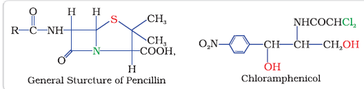
(b) Antiseptics and disinfectants
Antiseptics and disinfectants are also the chemicals which either kill or prevent the growth of microorganisms.
Antiseptics are applied to the living tissues such as wounds, cuts, ulcers and diseased skin surfaces. Examples are furacine, soframicine, etc. These are not ingested like antibiotics. Commonly used antiseptic, dettol is a mixture of chloroxylenol and terpineol. Bithionol (the compound is also called bithional) is added to soaps to impart antiseptic properties. Iodine is a powerful antiseptic. Its 2-3 per cent solution in alcoholwater mixture is known as tincture of iodine. It is applied on wounds. Iodoform is also used as an antiseptic for wounds. Boric acid in dilute aqueous solution is weak antiseptic for eyes.
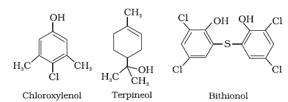
Disinfectants are applied to inanimate objects such as floors, drainage system, instruments, etc. Same substances can act as an antiseptic as well as disinfectant by varying the concentration. For example, 0.2 per cent solution of phenol is an antiseptic while its one percent solution is disinfectant.
Chlorine in the concentration of 0.2 to 0.4 ppm in aqueous solution and sulphur dioxide in very low concentrations, are disinfectants.
16.3.5 Antifertility Drugs
Antibiotic revolution has provided long and healthy life to people. The life expectancy has almost doubled. The increased population has caused many social problems in terms of food resources, environmental issues, employment, etc. To control these problems, population is required to be controlled. This has lead to the concept of family planning. Antifertility drugs are of use in this direction. Birth control pills essentially contain a mixture of synthetic estrogen and progesterone derivatives. Both of these compounds are hormones. It is known that progesterone suppresses ovulation. Synthetic progesterone derivatives are more potent than progesterone. Norethindrone is an example of synthetic progesterone derivative most widely used as antifertility drug. The estrogen derivative which is used in combination with progesterone derivative is ethynylestradiol (novestrol).
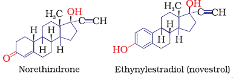
Intext Questions
16.1 Sleeping pills are recommended by doctors to the patients suffering from sleeplessness but it is not advisable to take its doses without consultation with the doctor. Why ?
16.2 With reference to which classification has the statement, "ranitidine is an antacid" been given?
16.4 Chemicals in Food
Chemicals are added to food for (i) their preservation, (ii) enhancing their appeal, and (iii) adding nutritive value in them. Main categories of food additives are as follows:
(i) Food colours
(ii) Flavours and sweeteners
(iii) Fat emulsifiers and stabilising agents
(iv) Flour improvers - antistaling agents and bleaches
(v) Antioxidants
(vi) Preservatives
(vii) Nutritional supplements such as minerals, vitamins and amino acids.
Except for chemicals of category (vii), none of the above additives have nutritive value. These are added either to increase the shelf life of stored food or for cosmetic purposes. In this Section we will discuss only sweeteners and food preservatives.
16.4.1 Artificial Sweetening Agents
Natural sweeteners, e.g., sucrose add to calorie intake and therefore many people prefer to use artificial sweeteners. Ortho-sulphobenzimide, also called saccharin, is the first popular artificial sweetening agent. It has been used as a sweetening agent ever since it was discovered in 1879. It is about 550 times as sweet as cane sugar. It is excreted from the body in urine unchanged. It appears to be entirely inert and harmless when taken. Its use is of great value to diabetic persons and people who need to control intake of calories. Some other commonly marketed artificial sweeteners are given in Table 16.1.
Table 16.1: Artificial Sweeteners
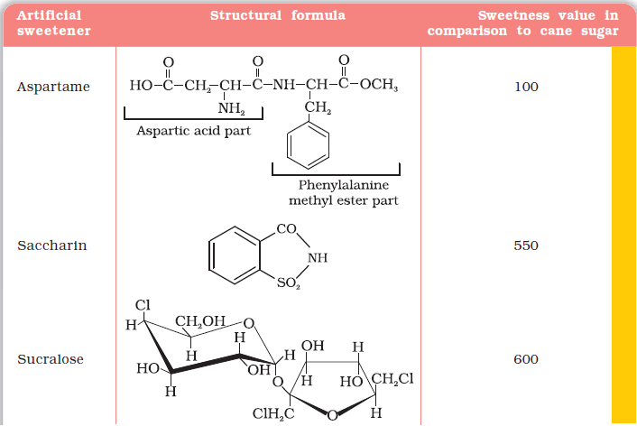
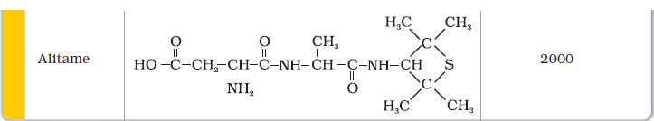
Aspartame is the most successful and widely used artificial sweetener. It is roughly 100 times as sweet as cane sugar. It is methyl ester of dipeptide formed from aspartic acid and phenylalanine. Use of aspartame is limited to cold foods and soft drinks because it is unstable at cooking temperature.
Alitame is high potency sweetener, although it is more stable than aspartame, the control of sweetness of food is difficult while using it.
Sucralose is trichloro derivative of sucrose. Its appearance and taste are like sugar. It is stable at cooking temperature. It does not provide calories.
16.4.2 Food Preservatives
Food preservatives prevent spoilage of food due to microbial growth. The most commonly used preservatives include table salt, sugar, vegetable oils and sodium benzoate, C6H5COONa. Sodium benzoate is used in limited quantities and is metabolised in the body. Salts of sorbic acid and propanoic acid are also used as preservatives.
Intext Question
16.3 Why do we require artificial sweetening agents ?
16.5 Cleansing Agents
In this Section, we will learn about detergents. Two types of detergents are used as cleansing agents. These are soaps and synthetic detergents. These improve cleansing properties of water. These help in removal of fats which bind other materials to the fabric or skin.
16.5.1 Soaps
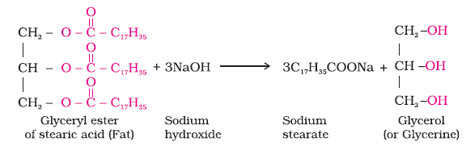
Soaps are the detergents used since long. Soaps used for cleaning purpose are sodium or potassium salts of long chain fatty acids, e.g., stearic, oleic and palmitic acids. Soaps containing sodium salts are formed by heating fat (i.e., glyceryl ester of fatty acid) with aqueous sodium hydroxide solution. This reaction is known as saponification.
In this reaction, esters of fatty acids are hydrolysed and the soap obtained remains in colloidal form. It is precipitated from the solution by adding sodium chloride. The solution left after removing the soap contains glycerol, which can be recovered by fractional distillation. Only sodium and potassium soaps are soluble in water and are used for cleaning purposes. Generally potassium soaps are soft to the skin than sodium soaps. These can be prepared by using potassium hydroxide solution in place of sodium hydroxide.
Types of soaps
Basically all soaps are made by boiling fats or oils with suitable soluble hydroxide. Variations are made by using different raw materials.
Toilet soaps are prepared by using better grades of fats and oils and care is taken to remove excess alkali. Colour and perfumes are added to make these more attractive.
Soaps that float in water are made by beating tiny air bubbles before their hardening. Transparent soaps are made by dissolving the soap in ethanol and then evaporating the excess solvent.
In medicated soaps, substances of medicinal value are added. In some soaps, deodorants are added. Shaving soaps contain glycerol to prevent rapid drying. A gum called, rosin is added while making them. It forms sodium rosinate which lathers well. Laundry soaps contain fillers like sodium rosinate, sodium silicate, borax and sodium carbonate.
Soap chips are made by running a thin sheet of melted soap onto a cool cylinder and scraping off the soaps in small broken pieces. Soap granules are dried miniature soap bubbles. Soap powders and scouring soaps contain some soap, a scouring agent (abrasive) such as powdered pumice or finely divided sand, and builders like sodium carbonate and trisodium phosphate. Builders make the soaps act more rapidly. The cleansing action of soap has been discussed in Unit 5.
Why do soaps not work in hard water?
Hard water contains calcium and magnesium ions. These ions form insoluble calcium and magnesium soaps respectively when sodium or
potassium soaps are dissolved in hard water.
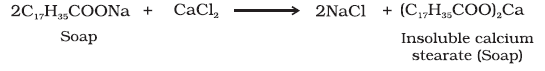
These insoluble soaps separate as scum in water and are useless as cleansing agent. In fact these are hinderance to good washing, because the precipitate adheres onto the fibre of the cloth as gummy mass. Hair washed with hard water looks dull because of this sticky precipitate. Dye does not absorb evenly on cloth washed with soap using hard water, because of this gummy mass.
16.5.2 Synthetic Detergents
Synthetic detergents are cleansing agents which have all the properties of soaps, but which actually do not contain any soap. These can be used both in soft and hard water as they give foam even in hard water. Some of the detergents give foam even in ice cold water.
Synthetic detergents are mainly classified into three categories: (i) Anionic detergents (ii) Cationic detergents and (iii) Non-ionic detergents
(i) Anionic Detergents: Anionic detergents are sodium salts of sulphonated long chain alcohols or hydrocarbons. Alkyl hydrogensulphates formed by treating long chain alcohols with concentrated sulphuric acid are neutralised with alkali to form anionic detergents. Similarly alkyl benzene sulphonates are
obtained by neutralising alkyl benzene sulphonic acids with alkali.
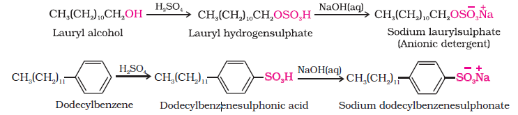
In anionic detergents, the anionic part of the molecule is involved in the cleansing action. Sodium salts of alkylbenzenesulphonates are an important class of anionic detergents.
They are mostly used for household work. Anionic detergents are also used in toothpastes.
(ii) Cationic Detergents: Cationic detergents are quarternary ammonium salts of amines with acetates, chlorides or bromides as anions. Cationic part possess a long hydrocarbon chain and a positive charge on nitrogen atom. Hence, these are called cationic detergents. Cetyltrimethylammonium bromide is a popular cationic detergent and is used in hair conditioners.
Cationic detergents have germicidal properties and are expensive, therefore, these are of limited use.
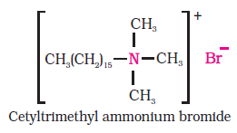
(iii) Non-ionic Detergents: Non-ionic detergents do not contain any ion in their constitution. One such detergent is formed when stearic acid reacts with polyethyleneglycol.
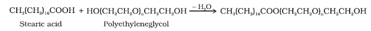
Liquid dishwashing detergents are non-ionic type. Mechanism of cleansing action of this type of detergents is the same as that of soaps. These also remove grease and oil by micelle formation.
Main problem that appears in the use of detergents is that if their hydrocarbon chain is highly branched, then bacteria cannot degrade this easily. Slow degradation of detergents leads to their accumulation. Effluents containing such detergents reach the rivers, ponds, etc. These persist in water even after sewage treatment and cause foaming in rivers, ponds and streams and their water gets polluted.
These days the branching of the hydrocarbon chain is controlled and kept to the minimum. Unbranched chains can be biodegraded more easily and hence pollution is prevented.
Intext Questions
16.4 Write the chemical equation for preparing sodium soap from glyceryl oleate and glyceryl palmitate. Structural formulae of these compounds are given below.
(i) (C15H31COO)3C3H5 – Glyceryl palmitate
(ii) (C17H32COO)3C3H5 – Glyceryl oleate
16.5 Following type of non-ionic detergents are present in liquid detergents, emulsifying agents and wetting agents. Label the hydrophilic and hydrophobic parts in the molecule. Identify the functional group(s) present in the molecule.
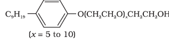
SUMMARY
Chemistry is essentially the study of materials and the development of new materials for the betterment of humanity. A drug is a chemical agent, which affects human metabolism and provides cure from ailment. If taken in doses higher than recommended, these may have poisonous effect. Use of chemicals for therapeutic effect is called chemotherapy. Drugs usually interact with biological macromolecules such as carbohydrates, proteins, lipids and nucleic acids. These are called target molecules. Drugs are designed to interact with specific targets so that these have the least chance of affecting other targets. This minimises the side effects and localises the action of the drug. Drug chemistry centres around arresting microbes/destroying microbes, preventing the body from various infectious diseases, releasing mental stress, etc. Thus, drugs like analgesics, antibiotics, antiseptics, disinfectants, antacids and tranquilizers are used for specific purpose. To check the population explosion, antifertility drugs have also become prominent in our life.
Food additives such as preservatives, sweetening agents, flavours, antioxidants, edible colours and nutritional supplements are added to the food to make it attractive, palatable and add nutritive value. Preservatives are added to the food to prevent spoilage due to microbial growth. Artificial sweeteners are used by those who need to check the calorie intake or are diabetic and want to avoid taking sucrose.
These days, detergents are much in vogue and get preference over soaps because they work even in hard water. Synthetic detergents are classified into three main categories, namely: anionic, cationic and non-ionic, and each category has its specific uses. Detergents with straight chain of hydrocarbons are preferred over branched chain as the latter are non-biodegradable and consequently cause environmental pollution.
EXERCISES
16.1 Why do we need to classify drugs in different ways ?
16.2 Explain the term, target molecules or drug targets as used in medicinal chemistry.
16.3 Name the macromolecules that are chosen as drug targets.
16.4 Why should not medicines be taken without consulting doctors ?
16.5 Define the term chemotherapy.
16.6 Which forces are involved in holding the drugs to the active site of enzymes ?
16.7 While antacids and antiallergic drugs interfere with the function of histamines, why do these not interfere with the function of each other ?
16.8 Low level of noradrenaline is the cause of depression. What type of drugs are needed to cure this problem ? Name two drugs.
16.9 What is meant by the term 'broad spectrum antibiotics' ? Explain.
16.10 How do antiseptics differ from disinfectants ? Give one example of each.
16.11 Why are cimetidine and ranitidine better antacids than sodium hydrogencarbonate or magnesium or aluminium hydroxide ?
16.12 Name a substance which can be used as an antiseptic as well as disinfectant.
16.13 What are the main constituents of dettol ?
16.14 What is tincture of iodine ? What is its use ?
16.15 What are food preservatives ?
16.16 Why is use of aspartame limited to cold foods and drinks ?
16.17 What are artificial sweetening agents ? Give two examples.
16.18 Name the sweetening agent used in the preparation of sweets for a diabetic patient.
16.19 What problem arises in using alitame as artificial sweetener ?
16.20 How are synthetic detergents better than soaps ?
16.21 Explain the following terms with suitable examples
(i) cationic detergents
(ii) anionic detergents and
(iii) non-ionic detergents.
16.22 What are biodegradable and non-biodegradable detergents ? Give one example of each.
16.23 Why do soaps not work in hard water ?
16.24 Can you use soaps and synthetic detergents to check the hardness of water ?
16.25 Explain the cleansing action of soaps.
16.26 If water contains dissolved calcium hydrogencarbonate, out of soaps and synthetic detergents which one will you use for cleaning clothes ?
16.27 Label the hydrophilic and hydrophobic parts in the following compounds.
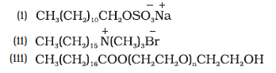
Answers to Some Intext Questions
16.1 Most of the drugs taken in doses higher than recommended may cause harmful effect and act as poison. Therefore, a doctor should always be consulted before taking medicine.
16.2 This statement refers to the classification according to pharmacological effect of the drug because any drug which will be used to counteract the effect of excess acid in the stomach will be called antacid.
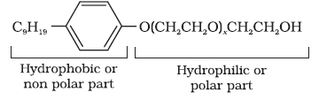